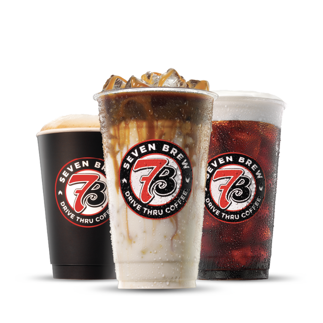
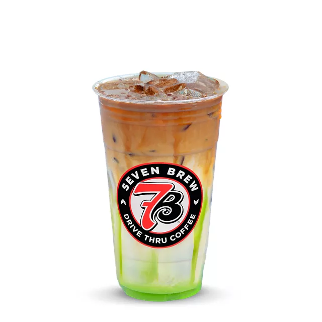
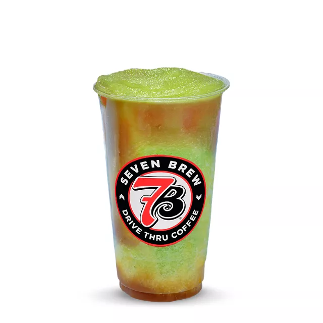
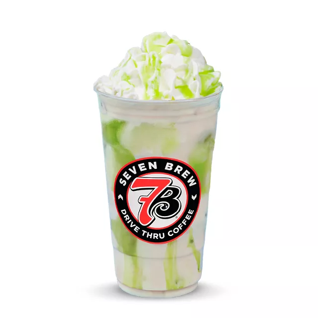
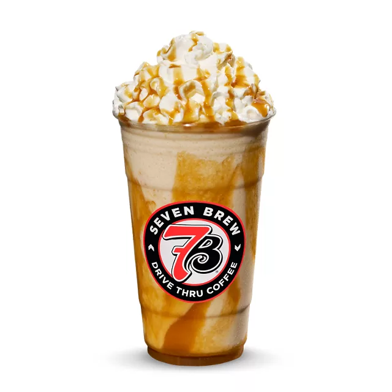
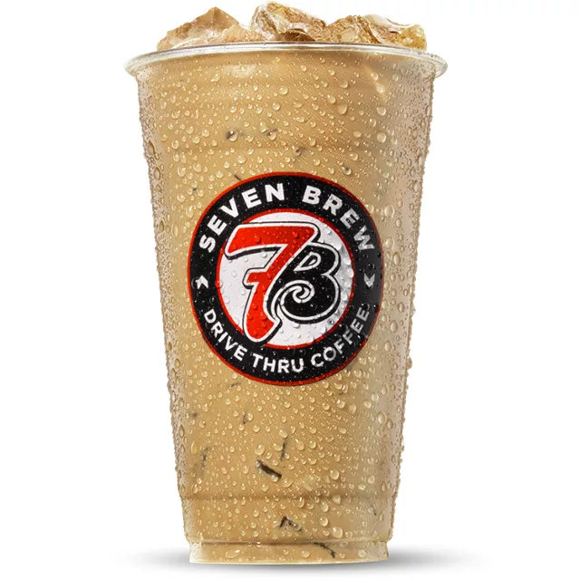
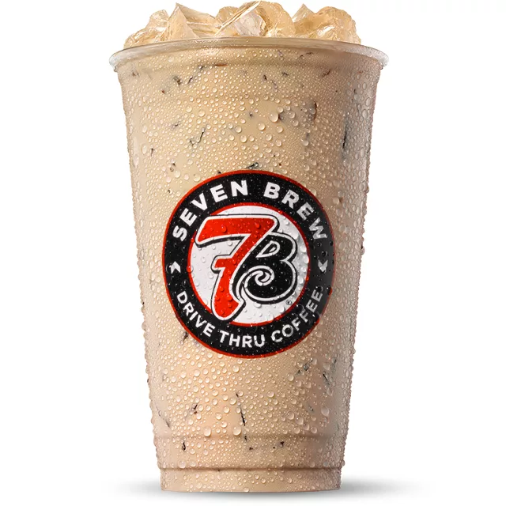

7 Brew category photo; exact recipe not pictured.
🍁 Seasonal Drop
Featured Sip #1
Original Pumpkin Blondie Breve
Vanilla + Caramel + Pumpkin
The brand's signature vanilla and caramel breve meets rich autumn pumpkin pie sauce and half-and-half cream for a smooth, spiced fall classic.
🗣️ Order Script: "Can I get a Medium Iced Original Pumpkin Blondie Breve with pumpkin cold foam on top?"
Prices: $4.75 / $5.50 / $6.50
🔥 ~560 kcal (Med)
Popular Drink Profiles
Explore detailed guides for 7 Brew's most popular drinks, including prices, calories, caffeine content and flavor breakdowns: Blondie (vanilla-caramel breve), Brunette (hazelnut-mocha breve), Smooth 7 (white chocolate–Irish cream), Cookie Butter (speculoos-inspired), Banana Bread (banana-vanilla breve), and Matcha Latte. For a full overview of 7 Brew's history and menu concept, see What Is 7 Brew Coffee?

Product image: 7 Brew.
🍁 Seasonal Drop
Featured Sip #2
Caramel Apple Pie Macchiato
Salted Caramel w/ Apple Butter Drizzle
Layered espresso macchiato with smooth whole milk, buttery salted caramel, rich tart apple butter drizzle lining the cup, and dark roasted espresso.
🗣️ Order Script: "Can I get a Medium Iced Caramel Apple Pie Macchiato with extra apple butter drizzle?"
Prices: $4.75 / $5.50 / $6.50
🔥 ~420 kcal (Med)

Product image: 7 Brew.
⚡ Energy Chiller
Featured Sip #3
Drizzled Apple 7 Energy Frozen Chiller
Green Apple w/ Caramel Drizzle
A vibrant, energizing frozen slush blending 7 Energy base with crisp green apple flavor, finished with swirls of golden caramel drizzle around the cup.
🗣️ Order Script: "Can I get a Medium Drizzled Apple 7 Energy Frozen Chiller with caramel drizzle?"
Prices: $5.50 / $6.50 / $7.50
🔥 ~340 kcal (Med)

Product image: 7 Brew.
🍵 Spiced Tea
Featured Sip #4
Apple Butter Chai Latte
Green Apple + White Chocolate w/ Whipped Cream & Apple Butter Drizzle
Warm spiced black tea chai combined with tart green apple syrup and velvety white chocolate sauce, crowned with whipped cream and apple butter drizzle.
🗣️ Order Script: "Can I get a Medium Iced Apple Butter Chai Latte with whipped cream and apple butter drizzle?"
Prices: $4.50 / $5.25 / $6.25
🔥 ~390 kcal (Med)
🏆 Reviewer’s pick: Tasting Table’s 2026 fall menu review rated the Apple Butter Chai Latte the best of this year’s five fall drinks, citing its balanced spice and not-too-sweet chai base.

Product image: 7 Brew.
🍦 Ice Cream Shake
Featured Sip #5
Pumpkin Roll Shake
Brown Sugar Cinnamon + White Chocolate + Pumpkin w/ Whipped Cream & Pumpkin Drizzle
Thick hand-spun vanilla ice cream shake blended with brown sugar cinnamon, white chocolate sauce, and pumpkin, crowned with whipped cream and pumpkin drizzle.
🗣️ Order Script: "Can I get a Medium Pumpkin Roll Shake with whipped cream and pumpkin drizzle?"
Prices: $5.50 / $6.50 / $7.25
🔥 ~720 kcal (Med)

Product image: 7 Brew.
🍁 Seasonal Drop
Warm Bakery
Cinnamon Roll Breve
Brown Sugar Cinnamon & White Chocolate
While featured prominently during holiday promotions, you can order this warm frosted pastry flavor any day of the year.
🗣️ Order Script: "Can I get a Medium Iced Cinnamon Roll Breve with extra cinnamon on top?"
Prices: $4.75 / $5.50 / $6.50
🔥 ~540 kcal (Med)
7 Brew category photo; exact recipe not pictured.
🍁 Seasonal Drop
Holiday Classic
Peppermint Bark Breve
Dark Chocolate, White Chocolate & Cool Peppermint
Rich double chocolate mocha combined with crisp winter peppermint syrup and steamed breve cream. Topped with whipped cream and red holiday sprinkles.
🗣️ Order Script: "Can I get a Medium Hot Peppermint Bark Breve with whipped cream?"
Prices: $4.75 / $5.50 / $6.50
🔥 ~510 kcal (Med)

Product image: 7 Brew.
🍁 Seasonal Drop
Spring Special
Lavender Honey Breve
Wildflower Honey + French Lavender & Vanilla
Delicate floral lavender balanced by sweet clover honey and smooth espresso over iced half-and-half. Refreshing and lightly sweet for spring mornings.
🗣️ Order Script: "Can I get a Medium Iced Lavender Honey Breve with sweet cold foam?"
Prices: $4.75 / $5.50 / $6.50
🔥 ~480 kcal (Med)
When Do Seasonal Drinks Launch & End?
7 Brew operates on a four-season rotating specialty drink schedule that covers fall, winter, spring, and summer. Each limited time offering LTO runs for roughly 8–12 weeks. The rotation covers fall winter spring summer with unique drinks each season. Here is when each new flavor launch typically happens:
- Fall Menu — Mid-August to late November. Pumpkin spice, apple, and warm bakery flavors. The most anticipated seasonal window. Think pumpkin spice holiday favorites and cozy autumn blends.
- Holiday / Winter Menu — Late November to late January. Holiday themed drinks including peppermint mocha gingerbread lattes, and sugar cookie breves.
- Spring Menu — February to May. Lighter florals like lavender, berry-forward flavors, and refreshing citrus builds.
- Summer Menu — June to mid-August. Tropical fruit energy combos, frozen chillers, and Italian soda specials.
When does seasonal end? Most seasonal syrups disappear once the next season's menu launches — so if you love a flavor, stock up before the window closes. Some items become returning favorite comeback drinks the following year based on customer demand. The current menu available now features the fall 2026 lineup listed above. That lineup — the Pumpkin Blondie Breve, Caramel Apple Pie Macchiato, Drizzled Apple 7 Energy Frozen Chiller, Apple Butter Chai Latte and Pumpkin Roll Shake — became available at participating stands starting September 1, 2026, per Tasting Table’s fall drinks review.